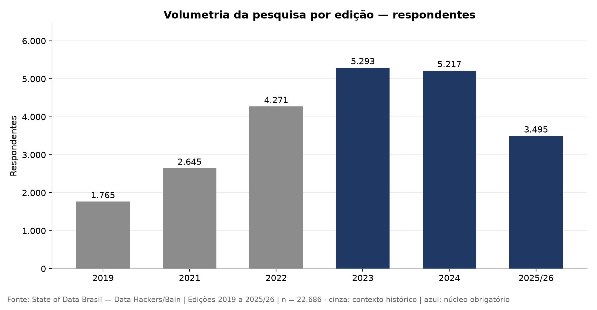
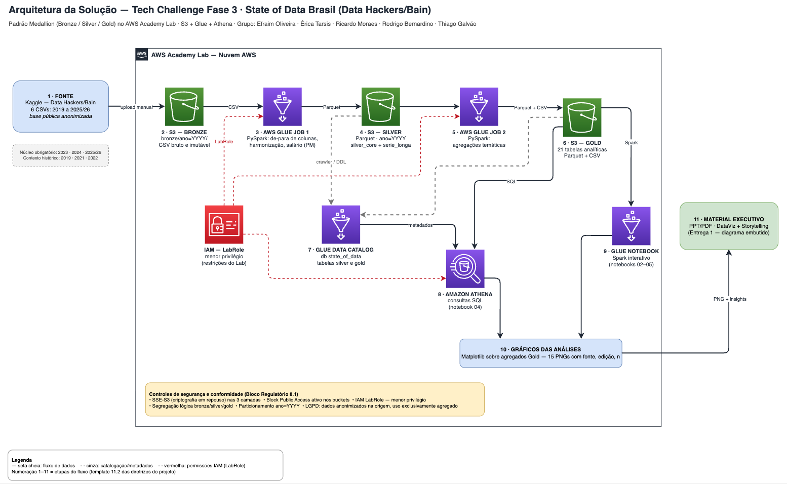
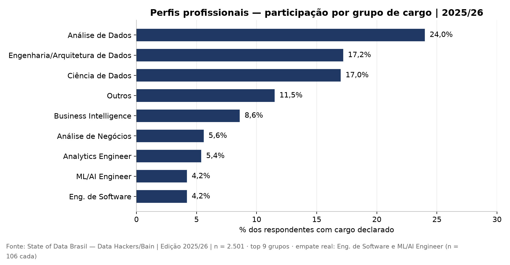
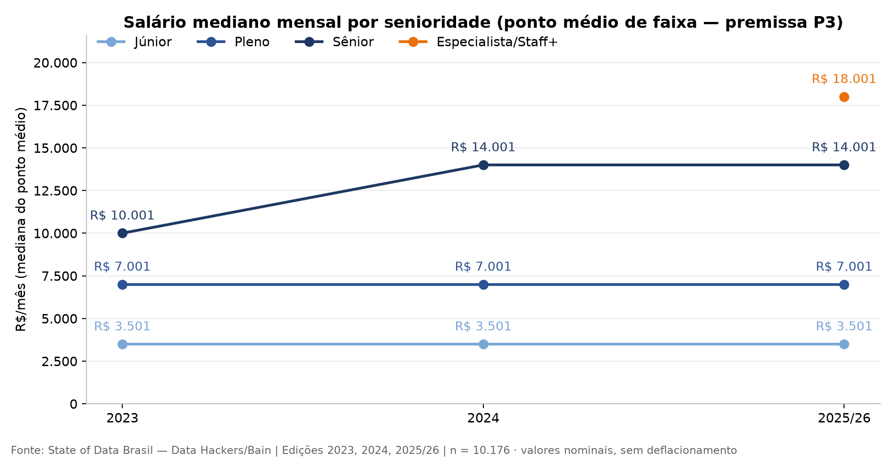
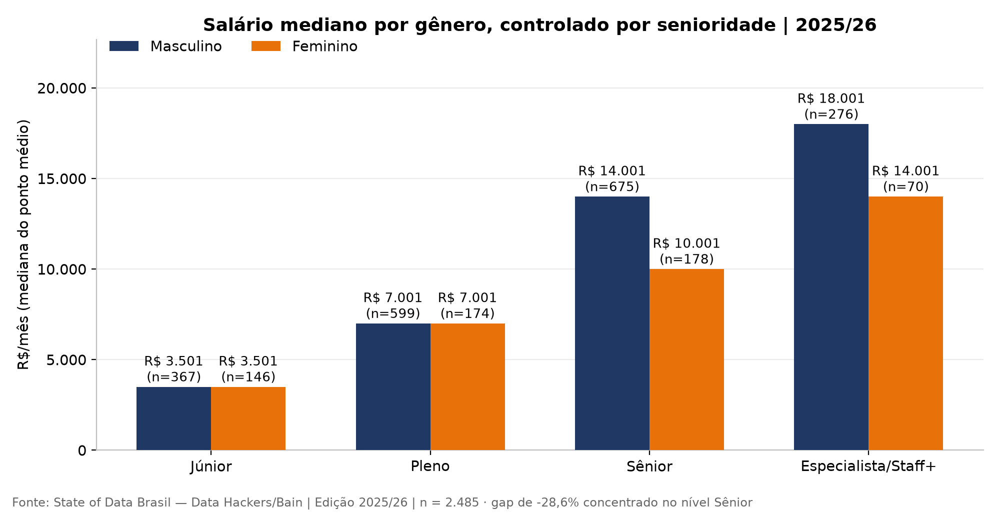
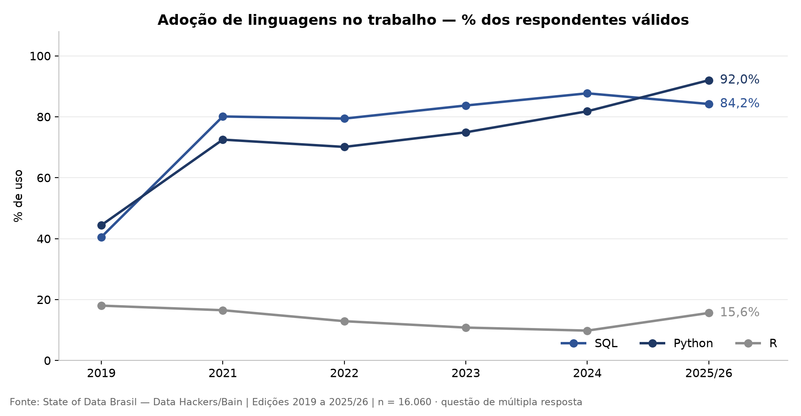
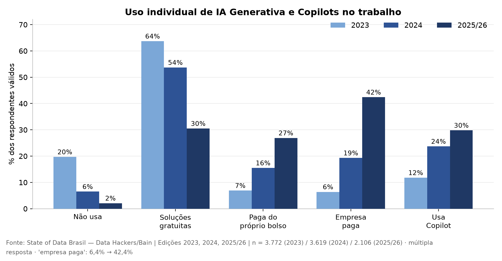
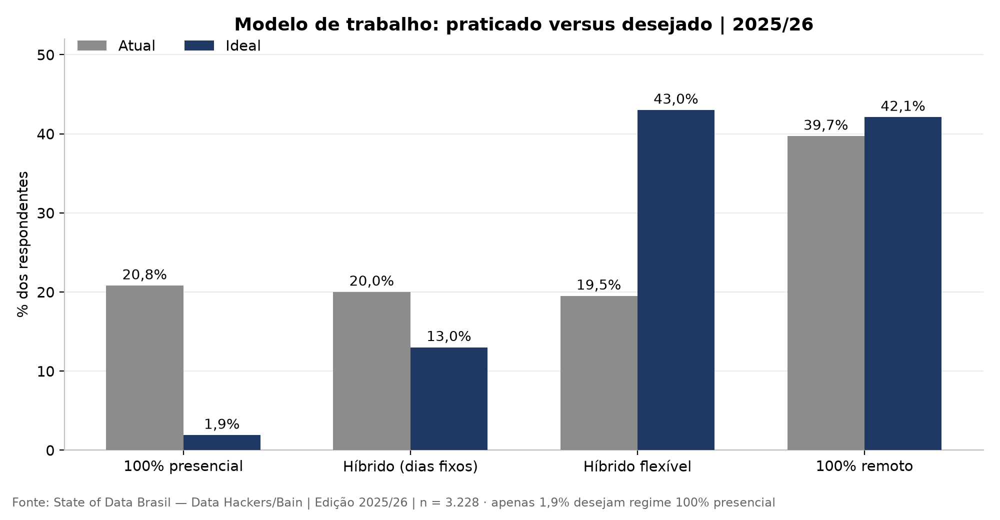
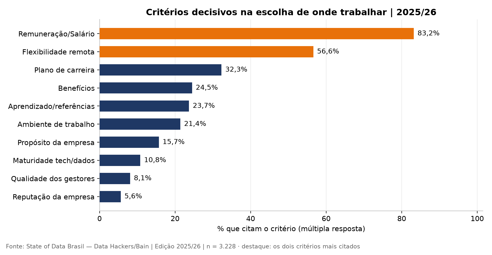

POSTECH DTAT · Tech Challenge — Fase 3 · Material Executivo
O Mercado Brasileiro de Dados:
o que 22.686 profissionais revelam sobre
contratar, capacitar e investir em IA
Big Data & Analytics na AWS · pesquisa State of Data Brasil (Data Hackers & Bain & Company)
| Grupo |
Efraim Oliveira · Érica Tarsis · Ricardo Moraes · Rodrigo Bernardino · Thiago Galvão |
| Cliente (simulado) |
Instituição financeira de grande porte — expansão de Dados, Analytics e IA |
| Data |
Agosto de 2026 |
Agenda e síntese executiva
Seis evidências que definem três decisões
- 1. Contexto e pergunta norteadora
- 2. Metodologia e arquitetura da solução
- 3. Mercado: perfis, senioridade e remuneração
- 4. Diversidade, tecnologias e adoção de IA
- 5. Regiões e modelos de trabalho
- 6. Recomendações, riscos e próximos passos
Fonte primária única: seis edições da pesquisa, processadas em pipeline próprio na AWS. Nenhum número deste material vem de fonte externa.
|
| Evidência (2025/26) | Decisão recomendada |
|---|
| Python 92,0% e SQL 84,2% de adoção | Trilha-base obrigatória Python + SQL |
| AWS lidera a nuvem com 48,3% | Priorizar stack e certificações AWS |
| IA como prioridade: 36,2% → 60,6% | Acelerar GenAI com governança |
| Empresa paga GenAI: 6,4% → 42,4% | Licenciamento corporativo + política de uso |
| Gap salarial de −28,6% no nível Sênior | Metas de diversidade na promoção |
| Apenas 1,9% desejam 100% presencial | Flexibilidade declarada como política |
|
Fonte: State of Data Brasil — Data Hackers/Bain (Kaggle) · Edição 2025/26 · n = 3.495 respondentes
Contexto de negócio
Expandir Dados e IA exige ler o mercado antes de contratar
- Cliente: instituição financeira de grande porte, decidida a expandir Dados, Analytics e IA.
- Dor: definir contratação, capacitação e investimento sem um retrato confiável do mercado.
- Risco de errar: bandas salariais desalinhadas, disputa por perfis escassos e investimento em IA sobre base de dados não confiável.
- Nossa entrega: pipeline analítico completo na AWS somado à leitura estratégica das seis últimas edições da pesquisa de referência do setor.
|
3
decisões em jogo: quem contratar, o que capacitar e onde investir
Implicação para o cliente
Cada decisão deste material é rastreável a um número da pesquisa — nenhuma recomendação é opinião.
|
Fonte: State of Data Brasil — Data Hackers/Bain (Kaggle) · Edições 2019 a 2025/26
Pergunta norteadora
Uma pergunta, sete desdobramentos
Como a evolução do mercado brasileiro de dados (perfil profissional, senioridade, remuneração, diversidade,
tecnologias e adoção de IA), observada nas três últimas edições da pesquisa State of Data Brasil,
deve orientar as estratégias de contratação, capacitação e investimento de uma instituição
financeira de grande porte?
- 1. Como está estruturado o mercado de Dados? (slide 7)
- 2. Quais perfis são mais valorizados? (slide 8)
- 3. Qual o cenário de diversidade de gênero? (slide 9)
- 4. Quais tecnologias têm maior adoção? (slide 10)
|
- 5. Qual o índice de adoção de IA e seu impacto? (slide 11)
- 6. Há diferenças por região, senioridade e modelo de trabalho? (slides 8, 9 e 12)
- 7. Quais oportunidades e desafios para quem investe? (slide 13)
|
As sete perguntas obrigatórias do enunciado são respondidas uma a uma nos blocos analíticos (slides 7 a 13)
Metodologia e fontes
Seis edições, 22.686 respostas, um pipeline auditável
|

Figura 1 — Respondentes por edição (cinza: contexto histórico; azul: núcleo obrigatório).
|
- Núcleo obrigatório: 2023, 2024 e 2025/26 — 14.005 respostas.
- Contexto histórico: 2019, 2021 e 2022, usados apenas em séries longas.
- Comparação só após harmonização: 69 colunas por edição em de-para versionado.
- Zero registros descartados entre origem e análise (reconciliação 1:1).
- Percentuais de múltipla escolha calculados sobre respondentes válidos de cada questão.
Por que confiar nos números
Premissas versionadas (P1–P8) e pipeline reexecutável: qualquer terceiro chega aos mesmos resultados.
|
Fonte: State of Data Brasil — Data Hackers/Bain (Kaggle) · Edições 2019–2025/26 · n total = 22.686
Arquitetura da solução AWS
Do CSV bruto à decisão: pipeline Medallion na AWS

Figura 2 — Arquitetura da solução, desenhada em Draw.io e executada no AWS Academy Lab.
Implicação para o cliente
Esta arquitetura é o blueprint mínimo da plataforma recomendada: S3 (Bronze/Silver/Gold), Glue Jobs em PySpark, Glue Data Catalog e Athena — com criptografia SSE-S3, Block Public Access e menor privilégio desde o primeiro dia.
Camada Gold com 21 tabelas analíticas · particionamento por ano · consultas SQL serverless no Athena
Pergunta 1 — Estrutura do mercado
Mercado consolidado em quatro famílias — e escasso no topo
|

Figura 3 — Participação por grupo de cargo, contribuidores individuais (top 9).
|
- Quatro famílias concentram 66,8%: Análise de Dados (24,0%), Engenharia/Arquitetura (17,2%), Ciência de Dados (17,0%) e BI (8,6%).
- Perfis emergentes: Analytics Engineer (5,4%) e ML/AI Engineer (4,2%) — inexpressivos nas primeiras edições.
- A base Júnior encolhe e o topo se sofistica: a edição 2025/26 criou a categoria Especialista/Staff+.
Implicação para o cliente
Disputa dura por sêniores. Formar internamente custa menos do que competir no mercado aberto.
|
Fonte: State of Data Brasil — Data Hackers/Bain (Kaggle) · Edição 2025/26 · n = 2.501 com cargo declarado
Pergunta 2 — Perfis valorizados e remuneração
Cada degrau de senioridade quase dobra a remuneração
|

Figura 4 — Salário mediano estimado por senioridade (ponto médio de faixa, premissa P3).
|
R$ 18.001
mediana do nível Especialista/Staff+ — e também do perfil ML/AI Engineer, o mais bem pago do mercado
- Júnior R$ 3.501 · Pleno R$ 7.001 · Sênior R$ 14.001.
- Maiores prêmios em engenharia e ciência aplicada — quem constrói plataforma e produtos de IA.
Implicação para o cliente
Banda salarial única para “profissional de dados” é erro de orçamento: calibrar por família de cargo.
|
Fonte: State of Data Brasil — Data Hackers/Bain (Kaggle) · Edição 2025/26 · mediana do ponto médio de faixa salarial
Pergunta 3 — Diversidade de gênero
A barreira não é a entrada: é a promoção
|

Figura 5 — Salário mediano por gênero, controlado por senioridade (2025/26).
|
−28,6%
diferença na mediana do nível Sênior — R$ 4.000 por mês
- Júnior e Pleno: medianas iguais. O gap surge no Sênior e persiste no topo (−22,2%).
- Participação feminina estagnada: 18,5% (2019) → pico de 24,8% (2022) → 22,0% (2025/26).
- Liderança: 19,1% das mulheres em posição de gestão, contra 23,6% dos homens.
Implicação para o cliente
Política de D&I focada só em contratação não resolve. A alavanca está em promoção e retenção.
|
Fonte: State of Data Brasil — Data Hackers/Bain (Kaggle) · Edição 2025/26 · comparação controlada por senioridade
Pergunta 4 — Tecnologias com maior adoção
Python e SQL são alfabetização; AWS lidera a nuvem
|

Figura 6 — Adoção de linguagens no trabalho, série 2019–2025/26 (múltipla escolha).
|
92,0%
de adoção de Python em 2025/26 — eram 44,4% em 2019 (+47,6 p.p.; crescimento de 2,1×)
- SQL em 84,2%: o par Python + SQL é pré-requisito, não diferencial.
- AWS lidera a nuvem com 48,3%, à frente de Azure e GCP.
- Power BI domina o consumo analítico corporativo.
Implicação para o cliente
Padronizar no que o mercado já domina reduz custo e prazo de contratação e de treinamento.
|
Fonte: State of Data Brasil — Data Hackers/Bain (Kaggle) · Edições 2019–2025/26 · base de respondentes válidos por questão
Pergunta 5 — Adoção de IA e impacto
IA deixou de ser iniciativa pessoal: 6,4% → 42,4% em dois anos
|

Figura 7 — Uso individual de IA generativa no trabalho, 2023 a 2025/26.
|
60,6%
dos gestores já tratam IA generativa como prioridade máxima ou entre as principais (eram 36,2% em 2023)
- “Não é prioridade” desabou de 28,8% para 11,3%.
- Quem não usa GenAI caiu de 19,7% para 2,1%.
- “Empresa paga a ferramenta”: +36,0 p.p. em dois anos (6,6×) — o uso saiu do gratuito e não governado.
Implicação para o cliente
Para banco regulado, fornecer ferramenta oficial é ganho de produtividade e mitigação de vazamento (shadow AI).
|
Fonte: State of Data Brasil — Data Hackers/Bain (Kaggle) · Edições 2023–2025/26 · base de respondentes válidos por questão
Pergunta 6 — Regiões, senioridade e modelos de trabalho
Talento está fora do eixo — e não quer voltar ao presencial
|

Figura 8 — Modelo de trabalho praticado versus desejado (2025/26).
|
1,9%
é a fatia de profissionais que deseja trabalhar 100% presencial
- O Sudeste concentra 64,4% dos profissionais e as medianas regionais são equivalentes (R$ 10.001): contratar fora do eixo amplia o funil sem alterar a banda salarial.
- O descompasso entre modelo praticado e desejado é o principal risco de atração e retenção.
Implicação para o cliente
Presença rígida funciona como imposto sobre a folha: encarece a contratação e acelera a saída.
|
Fonte: State of Data Brasil — Data Hackers/Bain (Kaggle) · Edição 2025/26 · respondentes com vínculo ativo
Pergunta 7 — Oportunidades e desafios
A janela de vantagem em IA se fecha; dados confiáveis decidem
|

Figura 9 — Critérios decisivos na escolha de onde trabalhar (2025/26).
|
- EVP vence salário isolado: remuneração lidera, mas flexibilidade, ambiente e crescimento formam o pelotão decisivo.
- A dor de quem já lidera times não é contratar: lideram dividir tempo entre técnica e gestão (36,3%) e gerenciar a expectativa das áreas (33,3%); qualidade dos dados aparece com 21,6%.
- Com a adoção de IA rumo à paridade, o diferencial migra para quem captura valor primeiro.
Implicação para o cliente
Investir em IA sem base de dados confiável antecipa o custo e adia o retorno — e a governança do dado é pré-requisito, não consequência.
|
Fonte: State of Data Brasil — Data Hackers/Bain (Kaggle) · Edição 2025/26 · base de respondentes válidos por questão
Recomendações estratégicas
Três frentes, oito ações, prioridade declarada
| Ação | Prioridade | Horizonte | Evidência-âncora |
|---|
| Política de uso e licenciamento corporativo de GenAI | Alta | 0–90 dias | 42,4% já têm GenAI paga pela empresa |
| Trilha obrigatória Python + SQL | Alta | 0–90 dias | 92,0% e 84,2% de adoção no mercado |
| Bandas salariais por família de cargo | Alta | 0–90 dias | De R$ 3.501 (Jr) a R$ 18.001 (Esp.) |
| Plataforma Medallion com catálogo e qualidade | Alta | 3–12 meses | Qualidade dos dados: 21,6% dos gestores |
| Metas de diversidade na promoção a Sênior+ | Alta | 3–12 meses | Gap de −28,6% concentrado no Sênior |
| Contratação remota nacional | Média | 6–18 meses | Sudeste concentra 64,4%; ampliar o funil |
| Programa de formação de base (Júnior → Pleno) | Média | 6–18 meses | Escassez relativa de sêniores |
| EVP com flexibilidade formalizada | Média | 6–18 meses | Apenas 1,9% desejam presencial integral |
Cada ação é rastreável a um indicador apresentado nos slides 7 a 13 · Fonte: State of Data Brasil (Data Hackers/Bain)
Riscos e limitações
O que os dados não dizem — e como tratamos isso
| Risco | Mitigação aplicada |
|---|
| Quebra de schema entre edições | De-para versionado + asserções automáticas |
| Mudança de categorias do questionário | Harmonização documentada; quebras declaradas |
| Queda de volumetria em 2025/26 | Apenas proporções; n declarado em todo gráfico |
| Denominador de múltipla escolha | Base = respondentes válidos da questão |
| Estimativa salarial por ponto médio | Regra única e auditável (premissa P3) |
|
- Seis leituras intuitivas foram testadas contra os dados; quatro foram refutadas e reescritas — o registro completo está na Seção 13.4 do relatório técnico.
- Exemplo: o prêmio salarial por cargo foi revalidado com controle de senioridade, e a suposta vantagem da Engenharia sobre a Ciência de Dados mostrou-se efeito de composição.
- Amostra por conveniência, sem pesos: descreve os respondentes, não o universo do país.
- Viés de seleção e de autorresposta: comunidade online engajada tende a superestimar a adoção de tecnologias novas.
- Sem inferência causal: análise descritiva por decisão metodológica — testes inferenciais não teriam validade nesta amostra.
- Tendências direcionais são mais confiáveis que níveis absolutos.
|
Transparência metodológica completa nos anexos técnicos e no relatório técnico do projeto
Próximos passos
90 dias: política de IA, trilha técnica e bandas salariais
| Quick win (0–90 dias) | Entregável | Resultado esperado |
|---|
| Publicar política de uso de IA generativa | Normativo interno | Elimina shadow AI e risco de vazamento |
| Disponibilizar ferramenta oficial licenciada | Contrato + rollout | Produtividade com trilha de auditoria |
| Lançar trilha Python + SQL | Programa de capacitação | Nivelamento técnico do time atual |
| Revisar bandas salariais por família de cargo | Tabela de remuneração | Competitividade na contratação |
Depois dos 90 dias
Plataforma Medallion com catálogo e qualidade (3–12 meses) · metas de diversidade na promoção (3–12 meses) · programa de formação de base e EVP formalizado (6–18 meses).
Roadmap derivado da matriz de priorização do slide 14
Anexos e referências
Rastreabilidade completa da evidência ao código
|
Anexos técnicos
- A1 — EDA e qualidade dos dados (preenchimento e nulos estruturais)
- A2 — Métricas do pipeline (22.686 linhas, zero descartes)
- A3 — Premissas versionadas P1–P8 e de-para de colunas
- A4 — Gráficos complementares (senioridade, salário por cargo, participação feminina, clouds, BI, regiões, prioridade de IA)
- A5 — Evidências de execução na AWS (E01–E08)
- A6 — Notebooks 01–05, Glue Jobs e diagrama Draw.io
|
Referências
- DATA HACKERS; BAIN & COMPANY. State of Data Brazil: edições 2019–2025/26. Kaggle.
- BAIN & COMPANY. Pesquisa de adoção de IA generativa no Brasil, 2025.
- MCKINSEY & COMPANY. The State of AI, 2025.
- DATABRICKS. Medallion Lakehouse Architecture.
- AWS BUILDERS. Medallion Architecture on AWS.
- BRASSCOM. Censo de Diversidade do Setor de TIC, 2024–2025.
Fontes externas usadas apenas como benchmark; todos os números deste material saem do pipeline sobre os dados oficiais da pesquisa.
|
Repositório do projeto: github.com/lgmricardo/Techchallenge3-G12 · Evidências de execução na AWS: pasta evidence/
Roteiro de apresentação — 30 a 45 segundos por slide
1 · Capa. Somos a consultoria de dados contratada. Em oito minutos mostramos o que 22.686 profissionais revelam sobre como o banco deve contratar, capacitar e investir em IA.
2 · Agenda e síntese. Se o comitê só puder ver um slide, é este: seis evidências, seis decisões. O restante é a sustentação.
3 · Contexto. O cliente já decidiu expandir. O risco não está na decisão — está em executá-la sem retrato do mercado.
4 · Pergunta norteadora. Uma pergunta central e sete desdobramentos exigidos. Cada um tem um slide dedicado.
5 · Metodologia. Seis edições, 22.686 respostas. Nada foi descartado e toda comparação ocorre após harmonização de esquemas.
6 · Arquitetura. Bronze imutável, Silver harmonizada, Gold agregada, catálogo e consulta SQL. Segurança desde o primeiro dia. Este desenho é também a plataforma que recomendamos.
7 · Mercado. Quatro famílias concentram dois terços do mercado. O topo é escasso — e é onde a disputa dói.
8 · Remuneração. Cada degrau quase dobra o salário. Banda única é erro de orçamento.
9 · Diversidade. O dado que muda a conversa: Júnior e Pleno têm medianas iguais. O gap nasce na promoção.
10 · Tecnologias. Python e SQL são alfabetização. AWS lidera — e é onde está o talento disponível.
11 · IA. Em dois anos, a IA saiu do bolso do funcionário para o orçamento da empresa. Quem não governa isso já convive com shadow AI.
12 · Trabalho. Menos de 2% querem presencial integral. Política rígida encarece a folha.
13 · Oportunidades. O gargalo dos gestores não é contratar: é confiabilidade de dados. Sem isso, IA não entrega retorno.
14 · Recomendações. Oito ações, cada uma amarrada a um número já mostrado, com prioridade e horizonte declarados.
15 · Riscos. Dizemos também o que os dados não permitem afirmar: amostra por conveniência, sem causalidade.
16 · Próximos passos. Quatro quick wins em 90 dias, todos de baixo custo e alto sinal.
17 · Anexos. Todo número tem código, premissa e evidência por trás. Perguntas?